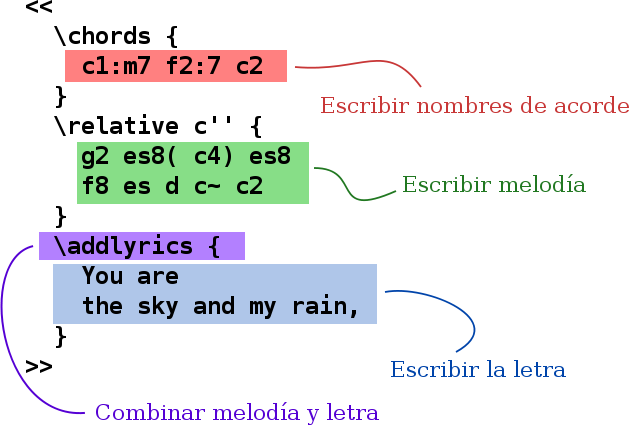
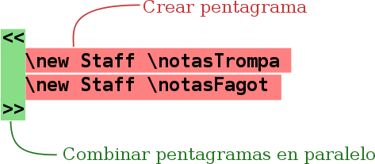

Entrada de texto
“Compilar” la música

(pulse para ver una imagen más grande)
LilyPond es un sistema compilado: se ejecuta sobre un archivo de texto que describe la música. El resultado se puede ver en la pantalla o imprimirse. En cierto modo, LilyPond se parece más a un lenguaje de programación que a los programas de edición gráfica de partituras.
No escribimos la música por el procedimiento de coger las notas de una barra de herramientas gráfica y arrastrarlas a una partitura que se refresca de forma dinámica; escribimos la música tecleando un texto. Este texto es interpretado (o “compilado”) por parte de LilyPond, que a su vez produce una hermosa música impresa.
Es posible que las personas acostumbradas a interfaces gráficos de usuario tengan que aprender una forma de trabajo nueva, pero ¡los resultados, sin duda alguna, merecen la pena!
Nota: Presentamos aquí una panorámica de nuestro paradigma de entrada de texto: ¡no es tan complicado como suena! No se preocupe ahora por comprender todos y cada uno de los detalles de estos ejemplos; nuestra documentación para principiantes se ocupa de todo ello a un ritmo mucho más progresivo.
La ele con la a, "La"
Las notas se codifican mediante letras y números. Las instrucciones especiales se introducen mediante barras invertidas.

Las alteraciones se hacen con nombres distintos: añada
-is para obtener un sostenido, y -es para un
bemol (son los nombres de las notas en holandés, pero están
disponibles otros idiomas). LilyPond averigua dónde hay que
imprimir las alteraciones.


Música pop
Junte acordes y letra para obtener una hoja guía de acordes:

Particellas de orquesta
El archivo de entrada contiene las notas de la pieza musical. La partitura y las particellas se pueden hacer a partir de un solo archivo de entrada, de manera que un cambio en una nota siempre afecta tanto a las particellas como a la partitura general. Para poder incluir la misma música en varios lugares, asignamos la música a una “variable” (un nombre):
Esta variable se usa entonces en una sola parte instrumental (aquí transportada, con los silencios de varios compases agrupados):

La misma variable se utiliza en la partitura general (aquí en tono de concierto):

Documentación para el principiante
Nos damos cuenta de que muchos usuarios ven un poco extraña esta forma de introducir la música. Por este motivo, hemos escrito una amplia documentación de ayuda a los nuevos usuarios, comenzando con Aprendizaje. El Manual de aprendizaje es el mejor sitio para empezar, porque allí se responden muchas preguntas antes de que se formulen.
De manera ocasional, los usuarios nuevos resultan innecesariamente confundidos por ciertos aspectos del comportamiento de LilyPond. Le rogamos que lea este manual antes de poner en duda si LilyPond está funcionando correctamente.
Tiene a su disposición una documentación mucho más profunda en la sección Manuales.
Ben Lemon, usuario de LilyPond, ha creado y publicado una colección de tutoriales en vídeo en su blog, dirigidos a nuevos usuarios.
Entornos de edición facilitados

(puse para ver una imagen más grande)
La preocupación de LilyPond está en primer lugar en la producción de música tipografiada con la máxima calidad; la creación de una interfaz gráfica de usuario (un GUI) nos habría distraído de esta meta. Sin embargo, existen otros proyectos cuyo propósito es hacer más fácil la creación de archivos de entrada de LilyPond.
Ciertos entornos de edición incluyen el coloreado sintáctico, compleción automática de instrucciones y plantillas preelaboradas. Otros programas ofrecen realmente un GUI que permite la manipulación directa de una partitura gráfica. Para ver más información, consulte Entornos mejorados.
Y ahora ¿qué?
Ya está preparado para Descargar LilyPond. ¿Aún no está convencido? Lea algo sobre los entornos de edición en Entornos mejorados.
Otros idiomas: English, català, česky, deutsch, français, magyar, italiano, 日本語, nederlands, 中文.
Acerca de la selección automática del idioma.